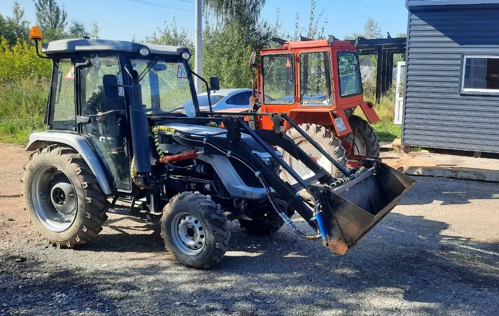
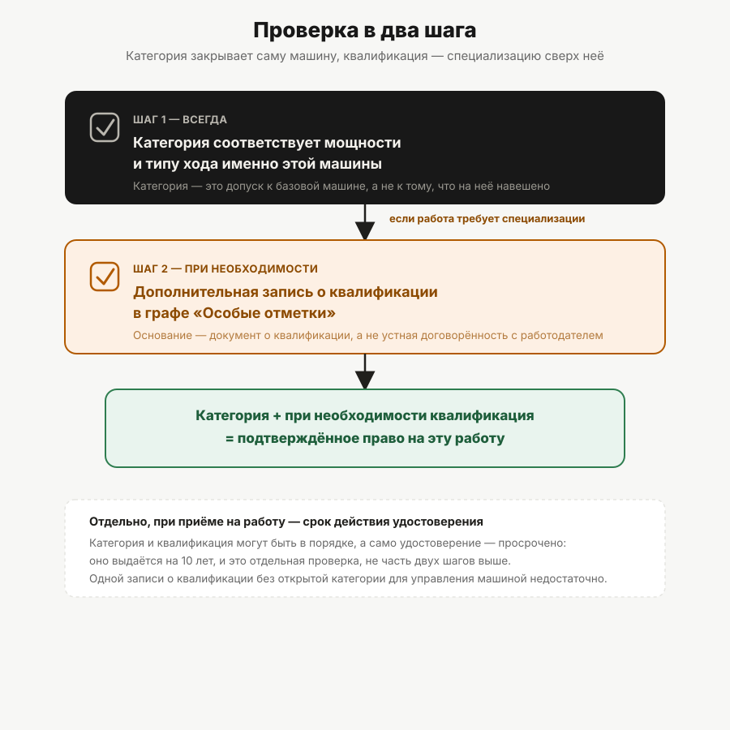

Какая категория нужна на погрузчик
Погрузчик — не отдельная категория, а машина, которую относят к B, C или D по мощности двигателя, плюс квалификационная отметка. Разбираем, как это работает на практике.
«Нужны права на погрузчик» — фраза звучит как название документа. Такого документа не существует: в перечне категорий Правил допуска к управлению самоходными машинами (постановление Правительства РФ от 12.07.1999 № 796) нет ни строки «категория погрузчика», ни отдельной буквы под фронтальную, телескопическую или вилочную технику. Погрузчик — это просто самоходная машина, которую относят к одной из уже существующих категорий по её мощности и типу хода, и разбираться нужно не с «категорией погрузчика», а с двумя обычными вопросами: какая у машины категория и какая нужна квалификация.
Откуда взялась «категория погрузчика»
Путаница обычно идёт из объявлений о работе и курсов с говорящими названиями вроде «права на погрузчик» — формулировка удобная для поиска, но не имеющая опоры в норме. Пункт 4 Правил допуска перечисляет категории A I–A IV, B, C, D, E и F — все они определены по типу и назначению техники (категория A) либо по мощности двигателя (категории B, C, D, E), либо по назначению как сельхозмашина (F). Погрузчика как отдельного пункта в этом перечне нет — его туда просто не вписали, потому что это не отдельная категория техники, а вид рабочего оборудования, устанавливаемого на машину той или иной категории. Полный перечень категорий и логика их построения — в статье «Категории удостоверения тракториста-машиниста».
Шаг первый: категория по мощности и типу хода
Определить категорию для погрузчика нужно так же, как для любой другой самоходной машины — по мощности двигателя и типу хода:
| Категория | Тип хода | Мощность двигателя |
|---|---|---|
| B | гусеничные и колёсные | до 25,7 кВт |
| C | колёсные | от 25,7 до 110,3 кВт |
| D | колёсные | свыше 110,3 кВт |
| E | гусеничные | свыше 25,7 кВт |
Установленное на машину навесное или сменное оборудование — ковш, вилы, стрела — на выбор категории не влияет: категория определяется характеристиками самой базовой машины (мощностью двигателя и типом хода), а не тем, что на неё навешено. Подробный алгоритм с пограничными случаями и тем, где взять точную мощность, — в статье «Как определить категорию под свою технику».
Шаг второй: квалификация «водитель погрузчика»
Категория отвечает на вопрос «какую машину вести», но не на вопрос «какую работу на ней делать». Для погрузочных работ в удостоверение может вноситься отдельная квалификационная запись в графу особых отметок — на основании документа о квалификации (свидетельство о профессии рабочего, должности служащего), как и для любой другой квалификации. Устройство этой графы, основания для внесения записи и разница между заменой с экзаменами и без — подробно разобраны в статье «Квалификации в особых отметках удостоверения». Здесь важно другое: категория и квалификация — независимые части документа, и наличие одной не гарантирует наличие другой.
Фронтальный погрузчик на базе трактора: типичный случай
Самый распространённый на практике случай — фронтальный погрузчик как навесное оборудование на обычном колёсном или гусеничном тракторе. Такая машина попадает в категорию по своей мощности точно так же, как трактор без погрузчика: наличие ковша спереди саму категорию не меняет. Если мощность базовой машины укладывается в диапазон категории B (до 25,7 кВт) — нужна B, если в диапазон C или D — соответствующая категория.

Телескопический погрузчик: на что смотреть
Телескопический погрузчик — колёсная самоходная машина, и логика та же: смотреть нужно на мощность двигателя конкретной модели, а не на тип стрелы или грузоподъёмность. Мощность у разных моделей телескопических погрузчиков различается заметно, поэтому нельзя сказать заранее «на все телескопические погрузчики нужна категория C» — определять категорию нужно по паспортным данным конкретной машины, тем же способом, что и для любой другой самоходной техники.
Вилочные и электропогрузчики: отдельная история
Здесь стоит честно обозначить границу того, что подтверждено источниками. Постановление Правительства РФ от 21.09.2020 № 1507 устанавливает, что регистрации в органах гостехнадзора подлежит техника с электродвигателем максимальной мощностью более 4 кВт — то есть сам факт наличия электродвигателя не выводит машину из-под действия норм о самоходных машинах, если её мощность превышает установленный порог. Категории B, C, D в Правилах допуска определены через «двигатель мощностью», без прямого разделения на двигатель внутреннего сгорания и электрический, поэтому есть основания полагать, что тот же принцип (категория по мощности) применим и к электропогрузчикам, — но это логическое предположение из сопоставления норм, а не отдельная прямая формулировка именно для электротехники.
Отдельный практический слой — вилочные погрузчики на закрытых складских территориях. По имеющимся у проекта источникам достоверно определить, применяется ли к такой технике на закрытой территории тот же порядок допуска, что и в остальных случаях, нельзя: вопрос требует отдельного, не подтверждённого в проекте источника. Эта статья сознательно оставляет его за своими границами, а не даёт приблизительный ответ.
Что должно быть в документе у работника
Если резюмировать всё разобранное выше в одну практическую формулу: у человека, который управляет погрузчиком, должно быть удостоверение тракториста-машиниста (тракториста) с категорией, соответствующей мощности и типу хода именно этой машины, — и, если работа требует специализации, дополнительно квалификационная запись в графе особых отметок. Одной только записи о квалификации без открытой категории для управления машиной недостаточно: квалификация добавляется поверх категории, а не вместо неё.

Как проверить чужое удостоверение перед приёмом на работу
Практический порядок проверки, не отдельная норма: сверить букву категории в удостоверении с мощностью конкретной машины (по её паспорту или техническому свидетельству), затем посмотреть графу особых отметок на предмет нужной квалификации, и отдельно убедиться, что срок действия удостоверения не истёк — оно выдаётся на 10 лет. Категория без соответствующей квалификационной отметки не обязательно означает отказ в приёме на конкретную работу — многое зависит от требований самой должности, а не только от документа. Тракторное направление «Авто-Класса» заявляет часть категорий, применимых в том числе к технике с фронтальным и другим навесным оборудованием, — подробнее на странице направления.